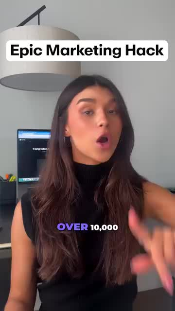
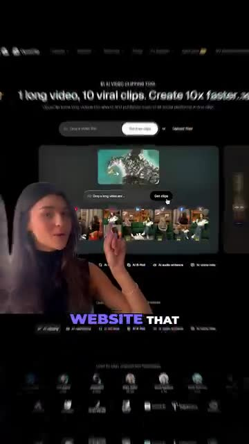
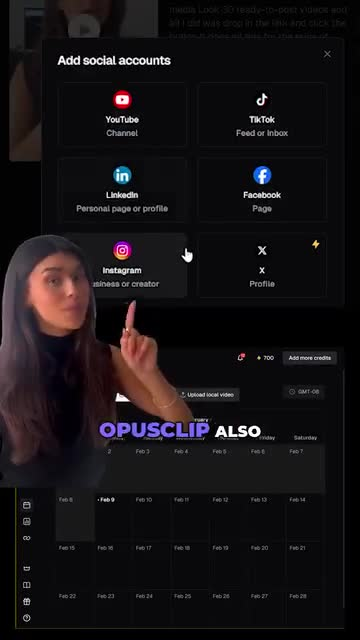
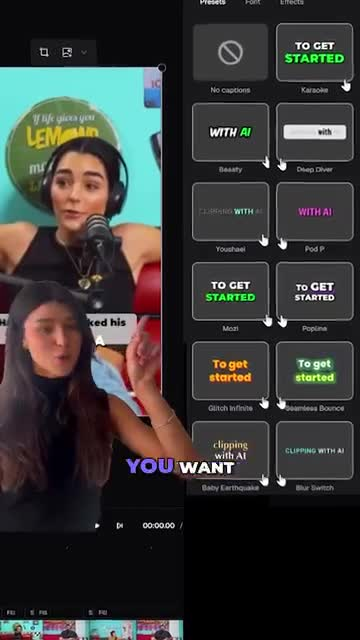
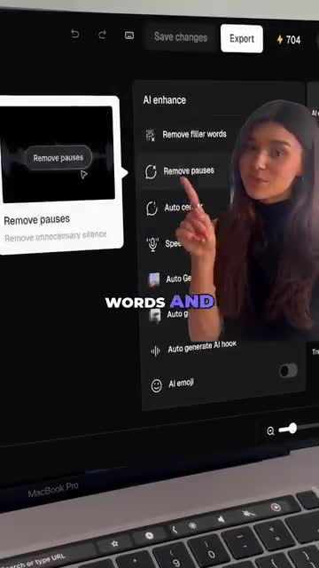
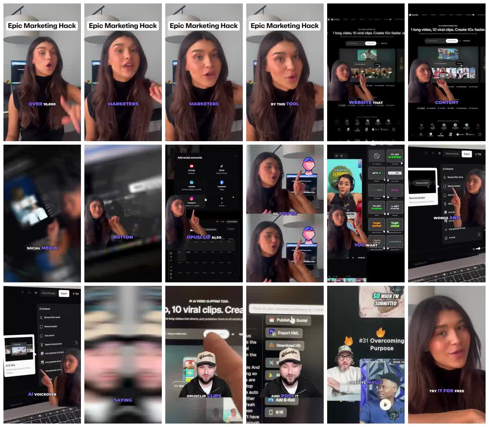
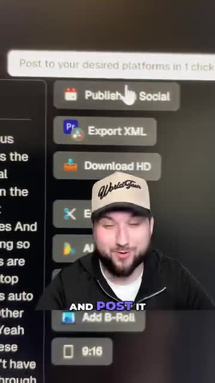
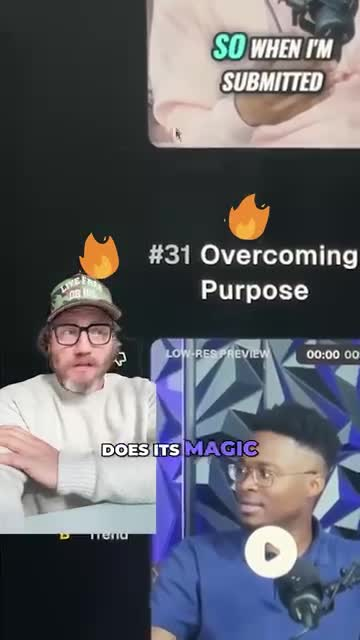

Hypothesis
If marketers see peer-adoption language followed by a visible long-video-to-many-clips workflow, they will believe the tool can multiply content output and start a free trial.
The ad sells OpusClip as a marketer shortcut by making one long video feel like the input for many publishable clips.
If marketers see peer-adoption language followed by a visible long-video-to-many-clips workflow, they will believe the tool can multiply content output and start a free trial.
Creators, marketers, and social teams already making long-form or podcast-style video but struggling to repurpose it into short-form clips.
Cold prospecting with product education and free-trial activation intent.
Landing-page clicks, free-trial starts, uploaded-video starts, and early activation rather than proven ROAS.
Problem-aware to solution-aware; the ad assumes viewers understand the pain of creating many social clips.
medium

authority-flavored hack hook
The viewer is cued to expect a shortcut that other marketers already know about, not a generic software walkthrough.

volume-unlock proof promise
The vague hack becomes a concrete output-volume promise: one source video can be turned into many social-ready assets.

workflow expansion
The product is positioned as an end-to-end social workflow rather than only a clip generator.

feature breadth as proof
The viewer sees customization and AI-styled polish, but the small UI also increases reading load on mobile.

manual-labor compression
The product starts to feel like a labor-saving editing stack, not just an automatic clipping tool.
risk-reducing trial CTA
The viewer receives a low-friction next step after seeing the workflow tour.
The ad sells OpusClip as a marketer shortcut by making one long video feel like the input for many publishable clips.
The viewer is moved from 'repurposing long content is slow' to 'one AI workflow can find, polish, and publish multiple clips.'
Show one raw long-form asset entering Submagic, then quickly reveal captions, Magic Clips, B-roll, zooms, and brand-safe platform variants.
The body becomes a feature tour, and the biggest claims are not backed by a clean uninterrupted before-after result.
A face-to-camera creator opens with a large 'Epic Marketing Hack' sticker and sequential captions around 'OVER 10,000', 'MARKETERS', and 'BY THIS TOOL'.
The viewer is cued to expect a shortcut that other marketers already know about, not a generic software walkthrough.
Show one raw long-form asset entering Submagic, then quickly reveal captions, Magic Clips, B-roll, zooms, and...
7 Evidence sources
The screen cuts to the OpusClip product page with the headline '1 long video, 10 viral clips. Create 10x faster' and a visual grid of generated clips.
The vague hack becomes a concrete output-volume promise: one source video can be turned into many social-ready assets.
Show one raw long-form asset entering Submagic, then quickly reveal captions, Magic Clips, B-roll, zooms, and...
4 Evidence sources
The walkthrough highlights AI-enhance controls such as removing filler words, removing pauses, speech enhancement, AI B-roll, auto stock, AI hooks, and AI emoji.
The product starts to feel like a labor-saving editing stack, not just an automatic clipping tool.
Show one raw long-form asset entering Submagic, then quickly reveal captions, Magic Clips, B-roll, zooms, and...
3 Evidence sources
The creator returns in a close-up with the caption 'TRY IT FOR FREE'.
The viewer receives a low-friction next step after seeing the workflow tour.
Show one raw long-form asset entering Submagic, then quickly reveal captions, Magic Clips, B-roll, zooms, and...
1 Evidence sources

Turn speed and output volume into a visible product tour, then reduce commitment with a free-trial CTA.
Make an AI clipping tool feel like a complete content-production workflow, not another editor to learn.
A face-to-camera creator opens with a large 'Epic Marketing Hack' sticker and sequential captions around 'OVER 10,000', 'MARKETERS', and 'BY THIS TOOL'.
The viewer is cued to expect a shortcut that other marketers already know about, not a generic software walkthrough.
authority-flavored hack hook
Show one raw long-form asset entering Submagic, then quickly reveal captions, Magic Clips, B-roll, zooms, and brand-safe platform variants.
The screen cuts to the OpusClip product page with the headline '1 long video, 10 viral clips. Create 10x faster' and a visual grid of generated clips.
The vague hack becomes a concrete output-volume promise: one source video can be turned into many social-ready assets.
volume-unlock proof promise
Show one raw long-form asset entering Submagic, then quickly reveal captions, Magic Clips, B-roll, zooms, and brand-safe platform variants.
A dark 'Add social accounts' modal shows YouTube, TikTok, LinkedIn, Facebook, Instagram, and X options over a scheduling-style calendar.
The product is positioned as an end-to-end social workflow rather than only a clip generator.
workflow expansion
Show one raw long-form asset entering Submagic, then quickly reveal captions, Magic Clips, B-roll, zooms, and brand-safe platform variants.
The editor view shows a vertical podcast clip beside a panel of caption or visual presets, including repeated 'TO GET STARTED' and 'WITH AI' cards.
The viewer sees customization and AI-styled polish, but the small UI also increases reading load on mobile.
feature breadth as proof
Show one raw long-form asset entering Submagic, then quickly reveal captions, Magic Clips, B-roll, zooms, and brand-safe platform variants.
The walkthrough highlights AI-enhance controls such as removing filler words, removing pauses, speech enhancement, AI B-roll, auto stock, AI hooks, and AI emoji.
The product starts to feel like a labor-saving editing stack, not just an automatic clipping tool.
manual-labor compression
Show one raw long-form asset entering Submagic, then quickly reveal captions, Magic Clips, B-roll, zooms, and brand-safe platform variants.

A close UI shot shows action buttons including 'Publish Social', 'Export XML', and 'Download HD' while the creator caption says 'AND POST IT'.
The workflow resolves into distribution: the promised output is not just edited, it can be moved toward publishing.
workflow completion
Show one raw long-form asset entering Submagic, then quickly reveal captions, Magic Clips, B-roll, zooms, and brand-safe platform variants.

The ad shows creator-style clips and a preview grid around text including '#31 Overcoming Purpose' and the caption fragment 'DOES ITS MAGIC'.
The body tries to add social-proof texture and result credibility by showing clips that appear to have been selected or generated.
result preview plus borrowed creator context
Show one raw long-form asset entering Submagic, then quickly reveal captions, Magic Clips, B-roll, zooms, and brand-safe platform variants.
The creator returns in a close-up with the caption 'TRY IT FOR FREE'.
The viewer receives a low-friction next step after seeing the workflow tour.
risk-reducing trial CTA
Show one raw long-form asset entering Submagic, then quickly reveal captions, Magic Clips, B-roll, zooms, and brand-safe platform variants.
| # | Claim | Proof type | Weakness | Evidence |
|---|---|---|---|---|
| 1 | The tool is already relevant to many marketers. | creator hook plus on-screen adoption language | The marketer-count claim is visible in the creative but not independently sourced in the evidence packet. |
6 evidence IDs
|
| 2 | One long video can become multiple short clips quickly. | product-page promise and clip grid | The ad shows the promise and interface, but not a fully traced before-after export of the same source clip. |
3 evidence IDs
|
| 3 | The workflow can connect to major social platforms. | social-account modal and calendar surface | The connection surface is shown, but successful scheduling or posting is not demonstrated in detail. |
1 evidence IDs
|
| 4 | AI can reduce manual editing work inside the clip editor. | AI-enhance and preset panels | Feature visibility is strong, but the viewer must infer output quality from menus rather than finished clip comparison. |
3 evidence IDs
|
| 5 | The workflow can end in publishing or exporting. | publish/export UI and free-trial CTA | The CTA is clear, but exact free-trial terms and signup friction are not visible. |
2 evidence IDs
|
Marketers know their long videos contain short-form value, but finding clips, editing them, and publishing them everywhere feels like too much recurring labor.
A skeptical viewer may accept that OpusClip has many AI features but question the unsupported marketer-count and speed claims in ev_ocr_001 and ev_ocr_006.
Showing a clear before-after output by the 4.256s product beat in ev_keyframe_006 would reduce proof debt. Condensing the 25.536-34.048 feature sequence in ev_keyframe_011 through ev_keyframe_013 would make the body less visually dense. Pairing the 55.328s free-trial CTA in ev_keyframe_018 with the finished clip result would connect the ask more tightly to the proof.
Creators and marketers want more output without adding more editing hours, supported by the one-long-video-to-ten-clips promise in ev_keyframe_006. The viewer wants AI speed but needs visible workflow proof before trusting claims like 10x faster in ev_ocr_006. A marketer's real job is not just clipping; it includes social platforms and publishing, which the ad surfaces in ev_keyframe_009 and ev_keyframe_016. The trial CTA needs low risk because the strongest claims remain visible product claims rather than verified performance evidence, as seen in ev_keyframe_018.
| Time | Viewer state | Trigger | Evidence |
|---|---|---|---|
| 0.000-2.000 | curious but guarded | The creator, 'Epic Marketing Hack' label, and marketer-count captions create a fast social-proof hook. |
3 evidence IDs
|
| 3.000-4.256 | promise recognition | The product page states the one-long-video-to-ten-clips payoff and shows a clip grid. |
3 evidence IDs
|
| 17.024 | scope expansion | Social-account options make the product feel connected to distribution, not only editing. |
1 evidence IDs
|
| 25.536-34.048 | evaluating feature credibility | Caption presets and AI-enhance controls give proof of breadth while increasing visual complexity. |
3 evidence IDs
|
| 46.816-51.072 | looking for workflow payoff | Publish/export buttons and creator-preview clips suggest the output can become a real posted asset. |
2 evidence IDs
|
| 55.328 | low-risk decision point | The close-up free-trial CTA asks for action after the product tour. |
1 evidence IDs
|
| Dimension | Score | Weakness / next improvement | Evidence |
|---|---|---|---|
| Copycat Ip Risk high confidence |
1/3 | Direct adaptation would risk copying competitor wording, UI, creator styling, and claims; only the mechanism should transfer. |
3 evidence IDs
|
| Swappability medium confidence |
1/3 | The mechanism is strategically useful but could describe many AI video editors unless Submagic-specific proof is added. |
3 evidence IDs
|
| Caption Readability medium confidence |
2/3 | Large spoken captions are readable; editor UI labels and OCR-heavy moments are harder on mobile. |
4 evidence IDs
|
| Core Story Idea high confidence |
2/3 | The idea is clear: one long video becomes many social clips, then moves toward publishing. |
3 evidence IDs
|
| Cta Strength high confidence |
2/3 | The free CTA is legible and low risk, but it arrives late and away from the product proof. |
1 evidence IDs
|
| Message Hierarchy medium confidence |
2/3 | Hook and promise align, while the middle feature stack asks viewers to read too much small UI. |
3 evidence IDs
|
| Pacing Edit Rhythm medium confidence |
2/3 | The ad keeps changing screens, but a 59.584s length and dense middle create retention risk. |
4 evidence IDs
|
| Proof Credibility medium confidence |
2/3 | The UI proof is visible, but claims and final-output quality are not independently demonstrated. |
4 evidence IDs
|
| Audience Fit medium confidence |
3/3 | The ad directly addresses marketers and shows creator/social workflow surfaces. |
4 evidence IDs
|
| Brand Product Integration high confidence |
3/3 | The product surface appears early and stays central to the story. |
3 evidence IDs
|
| Creative Intent Clarity medium confidence |
3/3 | The visible intent is clear: convert marketer interest into free-trial exploration through workflow proof. |
3 evidence IDs
|
| Hook Strength high confidence |
3/3 | The first frame is legible and persona-specific, but the adoption claim needs sourcing before reuse. |
3 evidence IDs
|
| Human Truth medium confidence |
3/3 | It understands that output volume, editing labor, and publishing overhead are one connected pain. |
3 evidence IDs
|
| Promise Clarity high confidence |
3/3 | The payoff is clear by 4.256s: one long video, many clips, faster creation. |
3 evidence IDs
|
Native UGC delivery and first-frame hook fit TikTok, but the 59.584s runtime and dense UI tour around ev_keyframe_011 to ev_keyframe_013 create retention risk.
Vertical framing and creator-led captions fit Reels, while small interface text in ev_keyframe_012 and ev_keyframe_013 may be hard to parse in-feed.
The promise is understandable early via ev_keyframe_006, but the middle relies on feature scanning rather than a tight before-after payoff.
The hook, product surface, and free-trial CTA support paid conversion behavior, but claim sourcing and final-output proof are weak for scale.
The marketer workflow is relevant to LinkedIn, yet the UGC style would need stronger agency, team, or business-output framing.